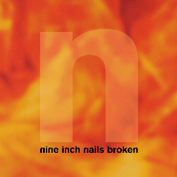

- ALBUM OF THE WEEK -
"Broken" by Nine Inch Nails

Release Date: September 22nd 1992
Genre: Industrial Metal
Length: 31:35
- TRACK LISTING -
#1 - Pinion
#2 - Wish
#3 - Last
#4 - Help Me I Am In Hell
#5 - Happiness In Slavery
#6 - Gave Up
#7 - Physical (You're So)
#8 - Suck
Favourite Track: #2 - Wish
Rating: 8/10